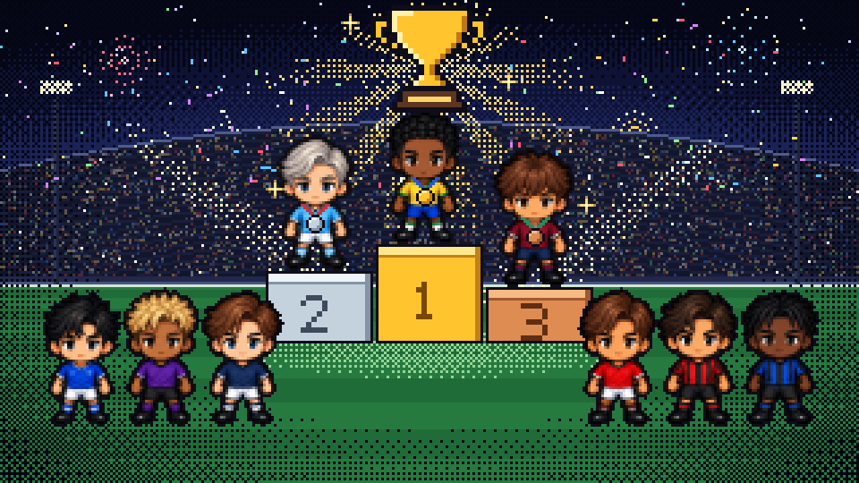
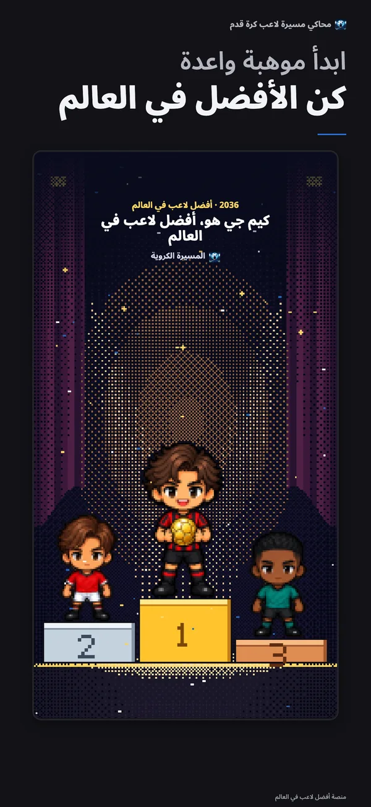
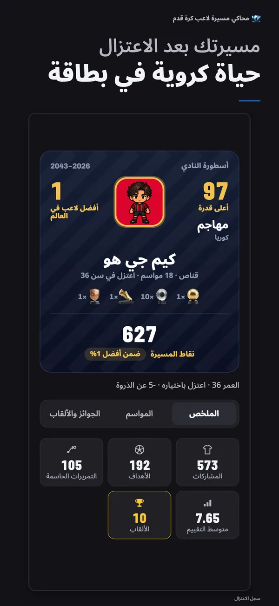
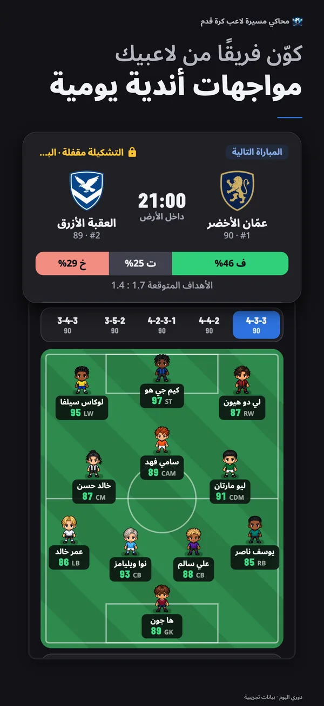
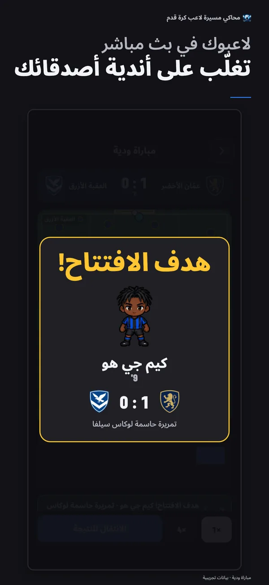
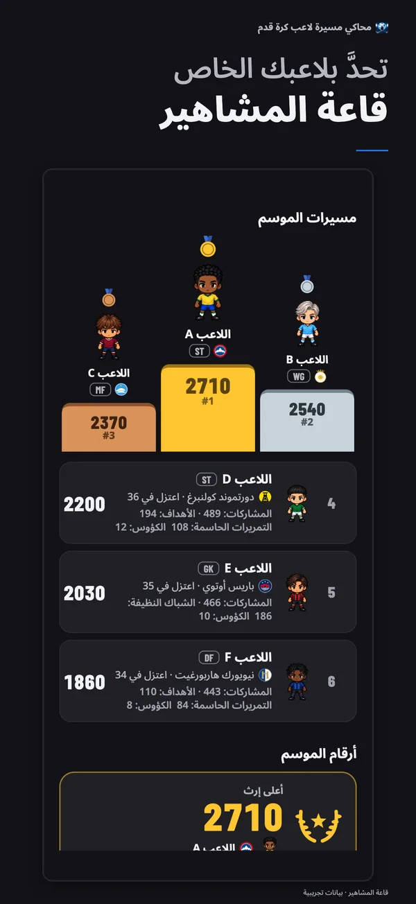
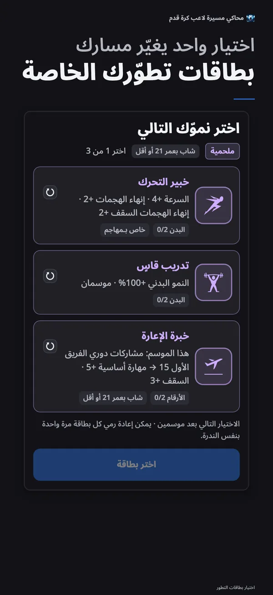

- YT Lab
- محاكي مسيرة لاعب كرة قدم

محاكي مسيرة لاعب كرة قدم مسيرة لاعب كاملة، من السابعة عشرة حتى الاعتزال
«محاكي مسيرة لاعب كرة قدم» لعبة محاكاة لمسيرة لاعب كرة قدم على الجوال من تطوير YT Lab. ابدأ لاعبًا ناشئًا في السابعة عشرة، وانتزع فرصتك من مقاعد احتياط الفريق الأول، وانتقل بين الأندية، وانضم إلى المنتخب، وقرّر بنفسك متى تعتزل. بطاقات النمو التي تختارها كل موسمين تغيّر مسارك، وبعد الاعتزال يصبح لاعبوك تشكيلة ناديك في الدوري الأسبوعي.
اختر نموّك التالي
مهاجم بعمر 27 عامًا OVR 96يمكنك إعادة رمي كل بطاقة مرة واحدة، وتبقى ندرتها كما هي.
هذه بطاقات التطبيق وحساباته الفعلية: مهاجم نجم في سن 27 عامًا وصل إلى أندر جولة، Legend. تستخدم إعادة الرمي والسحوبات التالية البطاقات والاحتمالات نفسها في التطبيق، وتبدأ التجربة في كل مرة باللاعب نفسه.
التنزيل مجاني مع مشتريات داخل التطبيق. متاحة على iPhone وiPad بنظام iOS 15 أو أحدث، وعلى Android 7.0 أو أحدث.
إذا أردت التجربة قبل التثبيت، ابدأ اللعب مباشرة في المتصفح
كل موسمين، ثلاث بطاقات، اختيار واحد
تنمو قدراتك تلقائيًا كلما لعبت، وتضيف بطاقات النمو خيارًا إلى هذا التطوّر. عند البداية، ثم كل موسمين، اختر واحدة من ثلاث بطاقات بنفس الندرة ومن فئات مختلفة. كلما ارتفعت الندرة، قويت التأثيرات. وبطاقتك الأولى مضمونة الندرة الملحمية.
دفعة فورية لقدراتك
ترتفع قدراتك لحظة الاختيار. تمنحك «التركيز يثمر» +6 لمهارة أساسية و+3 لسقفها، بينما ترفع «سدّ الثغرات» أدنى مهارة أساسية وأدنى مهارة داعمة بمقدار 4 لكل منهما.
تجاوز حدودك
لكل قدرة سقف مخفي يتوقف عنده النمو التلقائي. ترفع بطاقات «قليل من الموهبة» و«موهبة مفتوحة» و«قفزة في الموهبة» هذا السقف. ويمكن للبطاقات رفعه حتى 95.
مكافآت تكسبها في الملعب
تمنحك «صائد الأهداف» +1 في إنهاء الهجمات لكل 5 أهداف، و«نجم المباراة» +2 لإحدى القدرات لكل جائزتي MOM، و«جاهز للصعود» +8 لمهارة أساسية بعد 30 مشاركة. عليك أن تكسبها بأدائك.
مكاسب لها ثمن
تمنحك «انطلاقة متفجرة» +8 في السرعة مقابل −3 في اللعب الهوائي. وترفع «موهبة شيطانية» سقف مهارة أساسية بمقدار +12 والمهارة نفسها بمقدار +10، مقابل −3 لمهارة داعمة. بقدر ما تكسب، تتنازل.
سنوات إضافية في الملعب
تقلّل «الذروة الثانية» التراجع مع العمر إلى النصف لثلاثة مواسم، وتضيف عامين إلى مسيرتك. أما «اللهب الأخير» فترفع ثلاث مهارات أساسية بمقدار +6 لكل منها، لكنك تعتزل في نهاية ذلك الموسم.
إعادة الرمي مجانية
لم تعجبك بطاقة؟ أعد رميها وحدها. تبقى الندرة كما هي، وتأتي البطاقة الجديدة من فئة لا تتطابق مع فئتَي البطاقتين الأخريين.
من مقاعد الاحتياط إلى الكرة الذهبية
لن تبدأ لاعبًا أساسيًا في الدرجة الأولى. تدرّج من الأكاديمية إلى الفريق الرديف، وانتزع مكانك من مقاعد احتياط الفريق الأول، ثم استهدف جائزة أفضل لاعب في العالم التي تُمنح كل موسم. بطاقاتك وأرقام مواسمك تحدد إلى أين تصل.
- 17عامًا
الأكاديمية
تبدأ في الأكاديمية بعمر سبعة عشر عامًا. وتتيح لك حزمة البداية في الشباب البدء من سن الخامسة عشرة.
- 19بحلول هذا العمر
الفريق الرديف
تصعد إلى الفريق الرديف عندما تقترب من مستوى الفريق الأول أو تبلغ التاسعة عشرة. تُحسم الترقيات في نهاية الموسم.
- 16–21سن الظهور الأول حسب الدوري
من احتياطي الفريق الأول إلى التشكيلة الأساسية
يختلف سن الظهور الأول باختلاف الدوري. تصل إلى الفريق الأول عندما تستوفي شروط العمر والقدرات وتقييم الموسم، وتحدد ثقة المدرب وقت لعبك.
- الصيفبعد نهاية الموسم
الانتقالات وتجديد العقود
اطلب الانتقال أو اختر عرضًا، ثم تفاوض مع وكيلك على الأجر وبنود مثل وعد بالأساسية أو الشرط الجزائي.
- 18+في الفريق الأول
المنتخب
تصبح مرشحًا للاستدعاء إلى المنتخب إذا كنت في الفريق الأول وبلغت الثامنة عشرة. تتناوب البطولة العالمية والبطولات القارية كل عامين.
- 36–41حسب المركز
الاعتزال وما يبقى بعده
يستمر الجناح افتراضيًا حتى سن 36، وحارس المرمى حتى سن 41. تستطيع البطاقات والأحداث إطالة مسيرتك، ويمكنك أيضًا اختيار الاعتزال مبكرًا.
لاعبوك المعتزلون يصبحون ناديك
احتفظ بلاعبك المعتزل في سجل الاعتزال ليصبح ضمن تشكيلة ناديك في الدوري الأسبوعي. اختر التشكيلة والتكتيكات باللاعبين الذين طوّرتهم، ونافس أندية أخرى كل أسبوع. لم يعتزل أي من لاعبيك بعد؟ يمكنك المشاركة باللاعبين الافتراضيين.
موسم كامل في أسبوع
جهّز تشكيلتك يوم الاثنين، وخض مباريات الدوري من الثلاثاء إلى الجمعة. السبت لمرحلة مجموعات الكأس، والأحد للأدوار الإقصائية.
صعود وهبوط بين الدرجات
نتائجك كل أسبوع تحسم الصعود أو الهبوط. ابدأ من الدرجات الدنيا، وشقّ طريقك حتى درجة «عالمي».
مباراة ودية
أضف أصدقاءك بالرمز، واختر التشكيلة والتكتيكات، وخض مباريات ودية. خسرت؟ تحدّ صديقك مجددًا وردّ له الخسارة.
التحدي اليومي
يبدأ الجميع باللاعب نفسه، ويطوّرونه على مدى ثمانية مواسم، ويتنافسون على أعلى نتيجة قبل انتهاء المهلة.
العب شهرًا، وشاهد تطوّرك
يمتد الموسم عشرة أشهر، من أغسطس إلى مايو، ويضم 38 مباراة. تتحول مشاركاتك وأهدافك وتمريراتك الحاسمة وشباكك النظيفة وجوائز MOM وتقييماتك إلى نمو شهري، وتظهر كل زيادة بالأرقام. تقدّم شهرًا بشهر، أو دع الموسم يسير تلقائيًا.
النمو خلال شهرالمراوغة 57 → 58 +1
قد يكافئك شهر مميز بجائزة لاعب الشهر أو تشكيلة الشهر، أو تصدي الشهر لحراس المرمى. تحسم الأرقام النتيجة دون سحب مخفي. وفي نهاية الموسم، نافس على الهداف وتشكيلة الموسم ولاعب العام، وصولًا إلى أفضل لاعب في العالم.
من داخل اللعبة






تجربة مختلفة لكرة القدم
مسيرة لاعب واحد
في مسيرة اللاعب، لا توجد شاشة لإدارة التشكيلة أو لوحة تكتيكات أو ميزانية انتقالات. المدرب يمنحك وقت اللعب، وقد يفضّل مدربك الجديد نوعًا مختلفًا من اللاعبين. أما بناء ناديك وإدارته فلهما مكان مستقل في الدوري الأسبوعي.
الاحتمالات أمامك قبل أن تختار
في المواقف التي تواجهك خلال الموسم، يعرض كل خيار احتمالات ثلاث نتائج بأشرطة ونسب مئوية قبل أن تقرر. ويمكنك الاطلاع على أثر قدراتك وثقة المدرب وحالتك البدنية وبطاقات النمو في تلك الاحتمالات.
لكل دوري مسيرة مختلفة
من إنجلترا وإسبانيا وألمانيا وإيطاليا وفرنسا إلى كوريا واليابان وأمريكا الجنوبية. يختلف سن الظهور الأول والأجر وحصة اللاعبين الأجانب حسب الدوري. جميع أسماء الدوريات والأندية واللاعبين والمدربين خيالية.
تعتزل، وتبقى أرقامك
تبقى أرقام مسيرتك وتقييمها من ستة محاور: المستوى، والإنتاجية، والحصيلة التراكمية، والجوائز، والألقاب، ومستوى المنافسة. اكتشف موقعك بين جميع المسيرات والنسبة المئوية التي تقع ضمنها. وتدخل المسيرات المكتملة تصنيف لاعبي الموسم وقاعة المشاهير.
أسئلة شائعة
- هل اللعبة مجانية؟
- يمكنك تنزيل اللعبة واللعب حتى الاعتزال مجانًا، وكذلك استخدام بطاقات النمو وإعادة رميها. تشمل المشتريات الاختيارية إزالة الإعلانات وحزمة المراكز وحزمة البداية في الشباب وحزمة الداعم والذهب وتذاكر إعادة الرمي. احتمالات رمي قدرات البداية متساوية، سواء كانت الرمية مجانية أو بإعلان أو بتذكرة.
- هل أستطيع اللعب دون اتصال؟
- تعمل مسيرتك وتُحفظ على جهازك، لذا يمكنك اللعب دون اتصال. أما التصنيفات والدوري الأسبوعي والمباريات الودية والتحدي اليومي والمشتريات وإنفاق الذهب ونقل البيانات بين الأجهزة فتحتاج إلى اتصال بالإنترنت.
- هل أستطيع اللعب على الكمبيوتر أو المتصفح؟
- العب حتى الاعتزال في التطبيق على iPhone وiPad وAndroid. وعلى متصفح الكمبيوتر أو الهاتف، تتيح لك النسخة التجريبية للويب خوض المواسم الخمسة الأولى من اللعبة نفسها مجانًا ودون تثبيت.
- ما المراكز المتاحة؟
- حارس مرمى ومدافع ولاعب وسط وجناح ومهاجم. حارس المرمى والمهاجم مجانيان، وتفتح حزمة المراكز المراكز الثلاثة الأخرى. لكل مركز سبعة أساليب لعب، بإجمالي 35 أسلوبًا، وكلها مجانية.
- كم مسيرة يمكنني خوضها في الوقت نفسه؟
- تتيح لك خانات المسيرة الثلاث تطوير ثلاثة لاعبين في الوقت نفسه. تحدد جنسيتك المنتخب الذي تمثّله، وتختار نادي البداية من عروض محلية وخارجية.
- هل يوجد لاعبون أو أندية حقيقية؟
- لا. جميع الدوريات والأندية واللاعبين والمدربين في اللعبة خياليون.
- هل يظهر اسمي في التصنيف؟
- تظهر المسيرات المكتملة في التصنيف، ويمكنك إلغاء ذلك في أي وقت. لا تُنشر الأسماء التي تعدّلها بنفسك إلا بموافقتك.